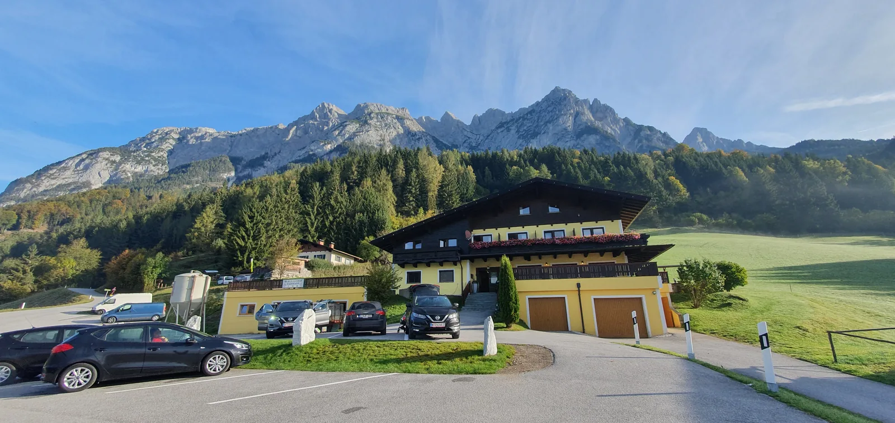

Eisriesenwelt: Divovski ledeni svijet
Već par godina planiramo put u Eisriesenwelt ponad mjesta Werfena u Austriji, i sad je konačno došlo vrijeme za to, doslovce pred kraj sezone jer je špilja za javnost otvorena tek od svibnja do listopada.

Uvod Već par godina planiramo put u Eisriesenwelt ponad mjesta Werfena u Austriji, i sad je konačno došlo vrijeme za to, doslovce pred kraj sezone jer je špilja za javnost otvorena tek od svibnja do listopada. Priča će možda nekome biti preduga, ali teško je izostaviti većinu impresija koje smo doživjeli. Ipak, ova portalska kategorija "Putopisi" su prije svega zamišljeni kao osobni doživljaj i pomoć nekome čitatelju tko bi želio posjetiti isto mjesto na temelju tuđih iskustava. Zato, ako niste na poslu, napravite si kavicu, udobno zavalite i čitajte.
Werfen Vikend smo započeli par dana prije, rezervacijom u malenom idiličnom obiteljskom hotelu, na putu par kilometara do špilje. Bukiranje unaprijed ima svoje prednosti, a jedna od njih je i sigurnost da imate smještaj kojeg je, zbog sadržaja koje nudi Werfen, prilično teško naći između svibnja i listopada. Kad spominjemo sadržaj – dva su najveća– Eisriesenwelt (u prijevodu: Divovski ledeni svijet ili u romantičnijoj varijanti – Svijet ledenih divova) i Burg Hohenwerfen, idilični 900-godišnji dvorac koji strši na stijeni ponad mjesta. Dok je špilja duga preko 42 kilometra najpoznatija baš po ledu, dvorac unatoč svojoj dugoj povijesti većini ljudi poznatiji je zbog filma koji je sniman u njemu – „Where Eagles Dare“ iz 1968.g , a u kojem su glumili Clint Eastwood i Richard Burton. Na turističkoj turi kroz dvorac, jedna cijela prostorija posvećena je tom filmu, najvećim dijelom plakatima, uz dvoja „zalutala“ stara vatrogasna kola /pumpe. Na sličan način, od filma danas se dobro koristi i turizam u Dubrovniku (Game of Thrones).
Doći do Werfena nije problem, oko 380 km, autocestom od Zagreba na Samobor, preko Slovenije, a u Austriji gdje autocesta prolazi pokraj samog mjesta- dvorca i špilje, dočekati će vas pravovremeni natpisi gdje trebate skrenuti. Sveukupno nekakvih četiri i pol sata vožnje, ako nećete previše stajati. Ako usput navratite i do slovenske Opatije – jezera Bled, što je samo 12 kilometarska devijacija od glavne rute, možda i malo duži, ali se isplati jer se na samoj obali jezera možete odmoriti i popiti odličnu kavu s prekrasnim pogledom. Moguća je ruta i preko Maribora na Graz pa Werfen, ali je nešto duža kilometrima i vremenom.
[caption id="attachment_2877" align="alignnone" width="4608"] Obiteljski hotel u kojem smo se smjestili, ispod masiva Tennen i na samo par kilometara od ulaza u Eisriesenwelt[/caption]Subotnje rano ustajanje u Werfenu, započeli smo neizostavnom kavom pa obilnim doručkom (a brate, ima puno finih stvari pa se sve mora probat'), a onda autom krenuli par kilometara asfaltom uz masiv Tennen do ulaska u Eisriesenwelt. Putem smo naravno, stajali na svim ugibalištima jer je dvorac taman izranjao iz magle koja se povlačila udolinom rijeke Salzach, iste one koja je kažu i oblikovala današnju špilju. Uz planinske lance u pozadini, foto-motiva se jednostavno nećete moći zasititi pa će se škljocanje nastavljati u nedogled. Prvi turisti počinju dolaziti busom i bez zadrške već u devet sati ujutro, pa sve do 15 sati popodne, uz brojne automobile i kampere. A to je, podsjećam, mjesec listopad.
[caption id="attachment_2881" align="alignleft" width="346"] Burg Hohenwerfen izranja iz magle[/caption]Preko ljeta su gužve još i veće. Gužve, odnosno veliki promet ljudi kroz špilju je jedan od razloga zašto u špilji nije dopušteno fotografiranje i video snimanje. Naime, u jeku sezone ture po špilji kreću u intervalima svakih 6 minuta (!) pa će vam na njihovim web stranicama objasniti da ako svaki pojedini ljubitelj fotografije napravi zastoj od samo jedne minute, to produžuje trajanje ture sa 70 minuta na preko dva sata. Ako se tome pridoda i hod po preko 1400 stepenica koji ovisi o svakom čovjeku pojedinačno, posebice djeci, pa se svaka tura dodatno „rastegne“ dužinom kolone i trajanjem odnosno čekanjem na temperaturi od oko nula stupnjeva. Upozorit će vas i da bi korištenje fleševa bitno i znatno upropastilo doživljaj špilje. U listopadu, kada smo mi posjetili špilju, ture su vođene svakih pola sata, pa opet se u jednom trenutku na više mjesta sačekivalo da se prethodna skupina pomakne tako da su ova upozorenja i restrikcije svakako sa svrhom. Na kraju, da ne bi bili nezadovoljni i bez uspomena, sa njihovih web stranica nude vam „skidanje“ njihovih fotografija sa cijele rute kroz špilju, u full rezoluciji. Također će vas upozoriti da se toplo obučete i obujete jer je temperatura u špilji oko točke smrzavanja.
Kartu kupujete na ulazu, velikoj modernoj zgradi u kojoj je i restoran te suvernirnica u kojoj dominantno mjesto zauzimaju gorski kristali svih oblika i boja. Dobit ćete popust na iskaznicu HPS-a ili speleološkog društva, pa iako popust nije nešto velik (ali veseli), na blagajni će vam obavezno provjeriti valjanost planinarske iskaznice; odnosno ovjerene markice za tekuću godinu, dok je za speleološku, odnosno iskaznicu speleologa (ili pripravnika) bilo potrebno dodatno objašnjenje kako vrijedi neograničeno od godine izdavanja. Dakle, nema zezanja, plaćajte članarinu. Ulaznica može uključiti samo špilju, ili kombinaciju žičare (gore/dolje) i špilje. Ako se odlučite vratiti od špilje do podnožja putem nekadašnjih istraživača, ljubazno će vas upitati da li ste proučili put prije, znate li za opasna mjesta (misli se na veliki sipar) te izvaditi plastificirani satelitski prikaz istoga, dajući vam do znanja kako tuda idete na vlastitu odgovornost. Žičara vam skraćuje put do špilje na tri minute umjesto sat i pol uzbrdo, pa je mudro iskoristiti je ukoliko taj dan planirate još i obilazak dvorca (zadnja tura za dvorac je u 16 sati).
Put do špiljeNa 20 minuta hoda od ulaza, prekrasnim putem dolazimo do račvanja – možemo odabrati put sa pogledom ili kratiti isti kroz prokopani osvjetljeni tunel. Svakako treba proći oba puta, tako da smo gore kratili, a natrag išli obilazno. Nedaleko od tunela, nakon još malo hoda dolazimo do Wimmer Hütte, kolibice – skloništa za speleologe napravljenog 1920-ih za njihova istraživanja ali i kao odmorište za prve turiste tih godina. Odatle je i polazna stanica žičare. Zanimljivo je da se u kolibici, osim kalijeve peći nalazi i aparat za sokove, te par fotografija, jedna iz povijesti istraživanja ledene špilje, a druga iz – Postojne. Natpis na kolibici reći će vam da ste na 1075 m nad morem, a moderna žičara će vas dignuti do gornje postaje s koje se stepenicama došećete do restorana Dr. Oedl-Haus na 1575 metara. Restoran, tipična alpska kućica, ima prekrasnu terasu sa pogledom. U godine kada je izgrađena namjena joj je bila planinarsko sklonište. Dočekat će vas i tabla sa popisom, lokacijama i izabranim fotografijama 29 austrijskih turističkih špilja. U kuću dr. Oedla vratiti ćemo se nakon ledene špilje, a prema njoj moramo hodati još 20-ak minuta, sve do njenog ulaza na 1641 metar nad morem.
Prije same špilje, u stijeni je doslovce iskopan sanitarni čvor, moderan, vrlo čist i vizualno ukalupljen. Posebnost mu je to što su tijekom njegovog iskopavanja pronađeni fosili megalodontnih školjkaša, a na to će vas upozoriti dvojezičnom tablom na kamenom zidu ispod samih fosila.
Ulaz u špilju je ogroman, impresivan, vidljiv i iz cijelog Werfena, a sa njega se pruža prekrasan pogled na dolinu i daleke planine. Na stijeni se je pričvršćena bakrena ploča – „Zaslužnoj istraživačici Eisriesenwelta Poldi Fuhrich (1898-1926)“, koju je uz zahvalnost postavio Speleološki klub Salzburg. (Nešto više o Poldi pročitajte u kratkoj Povijesti istraživanja Eisriesenwelta, u nastavku ovog teksta).
[caption id="attachment_2883" align="alignnone" width="4032"] Od restorana do špilje još je 20-ak minuta hoda lijepom i atraktivnom stazom[/caption]Čekajući početak ture, vrijeme kratimo družeći se sa pticama koje su toliko navikle na pridošlice, da nemaju problema sa time da vam jedu iz ruke ili par centimetara od vas. To su žutokljune galice, tipične visokoplaninske ptice, nešto poput naših kosova veličine vrana (zbog boje kljuna i nogu te crnog perja). Gnijezde se u pećinama iznad 1700 metara nadmorske visine, a drže rekorde u visini leta – na Himalaji redovito lete između 3500 i 6200 metara, dok postoje i zapisi jedne britanske ekspedicije koji su zamijetili jato čak na 8235 metara visine.
Svakako su simpatične pa mnogi koriste priliku za fotkanje sa njima, povremeno i puste glasan cijuk. Sam ulaz u špilju zatvoren je vratima, a ispred njih odabirete u koju grupu ćete se smjestiti - onu pod tablom za njemačko govorno područje ili englesko. Tako ćete dobiti i vodiča. Ovaj koji je nas zapao dobro govori, ali sa jakim njemačkim naglaskom te smo se morali koncentrirati i pažljivo slušati da bi bili sigurni što je rekao. Mene je u startu zbunio kada je u opisivanju onoga što ćemo vidjeti, naglasio koliko stepenica moramo ispenjati do vrha i natrag. Po meni bilo je to 14.000 umjesto 1400. Iako smo nas dvoje između sebe usaglasili razumijevanje broja, kako su to tek razumjeli Kinezi ili Indijci oko nas – ne znam. Visinska razlika koju ćemo prijeći je 134 metra. Dok čekamo početak ture, vodiči svakom drugom u grupi podijele starinsku rudarsku, karbidnu svjetiljku, istu onakvu naglašavaju, kakvu su koristili prvi istraživači. Iz istog razloga kroz špilju vodiči koriste i magnezijeve vrpce za osvjetljavanje pojedinih ledenih dijelova.
Tako ćemo i mi špilju gledati i doživjeti na potpuno isti način kako su je vidjeli speleolozi koji su prvi ušli u ovo carstvo leda. I moram reći da nas je to oduševilo.
[caption id="attachment_2885" align="alignnone" width="4032"] Upaljene karabitke čekaju, a dominira natpis o zabrani foto i video snimanja iznad ulaza. Kada se ova vrata otvore, dočeka vas snažno strujanje zraka te se treba i malo uprijeti za hodanje.[/caption]Nema druge rasvjete u špilji – pogotovo električne. Tako da i svaki pokušaj fotografiranja kriomice nema svrhe. Kada smo kod stare speleologije i takvih svjetiljki, moram spomenuti da i kod nas u SO Velebit, dan-danas jedan speleolog starog kova i škole- Marijan Čepelak, još uvijek za špiljarenje uporno i romantično koristi istu takvu. I osim verbalnih uputa, to je sve što smo dobili. Nema kaciga koje vam stave na glavi kao primjerice kod nas u Baraćevim špiljama. Nakon što je cijela grupa dobila upaljene svjetiljke, prije otvaranja vrata, vodič na upozorava na jako strujanje zraka pa ako vam se iste ugase, nakon što svi uđemo i vrata se zatvore vodiči će ih ponovo pripaliti.
A zatrebalo je svima – jer kad su se vrata otvorila to je doslovce bilo kao da smo u Senju na buri pa je trebalo i malo nogama „uprijeti“ za ulazak. Unutra, pravi speleološki osjećaj. Mrak, slabo svjetlo (znat će svatko tko je prije ulazio sa karabitkom oko pasa i na kacigi) i osjećaj golemog prostora. Ulazni kanal koji se strmo penje munižabskog je tipa, ogroman. Led počinje odmah, a lijevom stranom glavnog kanala penjemo se strmo gore drvenim, plitko postavljenim stepenicama radi lakšeg hoda, uz rostfreine ograde. Grupa se već u startu razduljila, ali nije naporno. Dolazimo do prvog ledenog stupa, mjesta gdje je davno, prvi put stao Anton Posselt, i gdje nam vodič priča o tome, ali ne trudim se previše razumjeti jer govori tiho. Pogled nam privlači ledeni oblik psa vučjaka na tom stupu. Inače, tijekom godine izgled i oblici ledenih skulptura mijenjaju se što topljenjem što nastajanjem novog leda (otapanjem snijega sa vrha planine voda se kroz vapnenac cijedi u špilju i smrzava) tako da ih nećete zateći istima ako špilju posjetite opet. Najbolje se to vidi po ranijim fotografijama sa njihovih web stranica, uspoređujete li ih sa onim što ste vidjeli nakon svog posjeta. Ovaj pas nije postojao na prethodnim fotografijama, a najbolja stvar je što, kada dođete ispred njega, shvatite da je taj „pas“ debeo svega par centimetara i sa te strane ne liči na ništa. Kako bilo, morao sam kradomice ipak iz džepa izvaditi Go pro i pokušati snimiti par sekundi videa sa tim vučjakom.
[caption id="attachment_2887" align="alignnone" width="2748"] Fotografija kradomice, iz džepa. Ovaj 'pas' u slijedećoj sezoni vjerojatno više neće postojati.[/caption]Penjemo se dalje, onda nam vodič objašnjava da smo na najvećem komadu leda u špilji, debljine 25 metara (Mörkov glečer) i kojega je ispenjao Alexander von Mörk, prvi istraživač ledene špilje. Usjekavši stube u ledenom zidu na kojem je davno prije stao Anton von Posselt-Czorich, popeo se iza njih vidio prostor koji je nazvao Eisriesenwelt.
[caption id="attachment_2890" align="alignleft" width="345"] U stvarnosti to izgleda ovako, vodič uz upaljeni magnezij priča o ovom dijelu špilje[/caption]Kod svakih velikih oblika zastajemo, vodiči pale magnezijeve vrpce i drže kratko predavanje, na nekim mjestima podsjećaju kako se upravo iznad nas nalazi 400 metara stijene, ali i kako je prodorom vode nekim mjestima isprano – nestao led star 60000 godina. Prekrasne formacije leda koje se nižu pred nama imaju nazive poput; Ledene orgulje, Ledena kapelica, Ledena vrata, Ledeni divovi, Mörkov glečer...
Unatoč niskoj temperaturi, nešto iznad nule pri vrhu, nije tako hladno. Primjećujemo i da neki posjetitelji nose i tenisice. Ne znam koliko smo mjerodavni za ocjenu osjećaja hladnoće jer ipak koristimo špiljarsko iskustvo pa nam je i odjeća i obuća primjerena (flisevi, soft-shell, gojze), a i do špilje smo došli štreberski, sa ruksakom i svim potrebnim za planirani poludnevni boravak u špilji i na planini, a ne poput nekih dvadesetogodišnjaka u trapericama i sa pivom u rukama (o da, i toga je bilo).
[caption id="attachment_2891" align="alignnone" width="2000"] Ispred "Ledenog slona" koji danas izgleda još i vjernije (foto: Eisriesenwelt.at)[/caption]Put nas vodi do ogromne ledene skulpture nazvane Slon, ne trebam vam pojašnjavati zašto. Upoznati smo i kada smo došli u najveću dvoranu – visine preko 40 i dužine od preko 70 metara. Cijela staza prema gore i dolje postavljena drvenim stepenicama tek je na tom jednom mjestu, zbog sipara u dužini nekoliko metara izbetonirana i podložena kamenjem. U nekim dijelovima špilje na ledu zatječemo i gomile drvene građe i novih rostfrei cijevi koji će očito zamijeniti dotrajale daske i hrđom nagrižene prijašnje cijevi.
[caption id="attachment_2892" align="alignleft" width="345"] Posljednje počivalište prvog istraživača Alexandera von Mörka, na vrhu Eisriesenwelta[/caption]Tu je, na samom vrhu turističke staze, ujedno i najvećoj dvorani u napravljenoj niši i urna sa posljednjim počivalištem A. von Mörka, prema njegovoj osobnoj želji. Dvorana nosi naziv Mörkova katedrala.
Iza toga, nalazi se ledeno jezero (iako je teško razlučiti da li je voda na ledu ili je to kristalno čisti led, krenuvši dalje, vodič upozorava one visoke da paze na glavu sa desne strane (pazimo), a onda nas put vodi do ledenog zida, kao nožem odrezanog na kojemu su vidljivi slojevi nastajanja. Ako smo dobro razumjeli vodiča, pojedini slojevi nastali su u jednoj kalendarskoj godini. Put dalje vodi nas kroz tunel u ledu, pretpostavljam da je riječ o onoj 25 metarskoj gromadi, a izlaskom iz njega pruža nam se pogled daleko, stotinjak i više metara duboko dolje niz glavni kanal prema izlazu, na kolone ljudi koje se spuštaju sa jedne i penju sa druge strane noseći karabitke, dok svaku predvodi vodič sa gorećom magnezijskom vrpcom.
[caption id="attachment_2949" align="alignnone" width="1500"] Pogled 100-tinjak metara u dubinu prema izlazu, kolona ljudi sa karabitkama i vodič sa magnezijem (foto: internet)[/caption]Uskoro smo pred izlazom, vodiči nam govore da lampe samo ostavimo na klupi pored, a na vratima nas silina vjetra iz špilje doslovce, ali stvarno doslovce izgura van. Posjet je završen, malo čavrljamo sa našim vodičem, zanima nas ima li leda dalje u špilji. Odgovara kako nema, od najviše točke na turi kroz špilju gdje se kanal pruža dalje, možda još nekih 200-tinjak metara. Pitamo i za druge ulaze ako bi se htjelo posjetiti ostatak ovog špiljskog sustava, pa dobijemo odgovor – „vjerojatno moguće, ako ih uspijete naći“. Zanimalo nas je i ono što smo mogli pročitati na internetu, a to je bukiranje „privatne ture kroz špilju“ ili ture vrlo malih grupa, a koje cijenom trpaju između 3 i 5 tisuća kuna po glavi „sretnika“. Vjerojatno je tu uključen prijevoz i noćenje, ali opet, barem 3-5 puta više od dostupne normalne cijene za sve. Kako god, vodiči nisu imali pojma o tako nečemu, pa je očito i da takve sulude kombinacije zapravo i nemaju prođu. A što se nas tiče, kažu kako uvijek postoji mogućnost kontakta sa nekim obližnjim speleološkim društvom za put i doživljaj Eisriesenwelta.
[caption id="attachment_2950" align="alignnone" width="1840"] Panorama i pogled za dušu sa ulaza. Žutokljuna galica u kadru je neizostavna[/caption]Ostavljamo vodiče da se griju do slijedeće ture, uživamo na klupicama postavljenim uokolo, na suncu i temperaturi od 20 stupnjeva. Pogled se pruža daleko dolje i u daljinu. Odmah nas okružuju i galice gledajući ima li možda netko nešto za klopu. Nakon nekog vremena čilanja, spuštamo se do restorana na kavu i pivu, ali nam i klopa izgleda primamljivo, pa iako nismo gladni, mažemo pomfrit (da se može piva slađe popit) te prigodno naručujemo i štrudl od jabuka sa preljevom od vanilije. Mljac. Galice su i tu prisutne pa neprestano skakuću za mrvicama po drvenoj ogradi i stolovima. Ili stoje na ogradi, dvadesetak centimetara od vašeg lica čekajući da se odobrovoljite pokojim zalogajem i za njih.
Burg Hohenwerfen Opraštamo se sa planinom kako smo zaplanirali i idemo u posjet dvorcu. Koristimo žičaru za brzi spust dolje. Za nevjerovati ali galice su i ovdje, postrojene na ogradi i pažljivo gledaju u svakoga tko prolazi, da li što jede ili nosi od hrane. Izlaskom sa žice, gazimo panoramskim putem oko tunela pa do glavnog ulaza, a odatle desetak minuta autom do dvorca – Burh Hohenwerfena. Kako je on na vrhu špičaste stijene (150-ak metara), trebalo je 40 minuta hoda do ulaza, pa tako stižemo taman na zadnju vodičku turu. Propustili smo show sa pticama grabljivicama (dva puta dnevno, „Birds of prey“) u kojem sokolari u tradicionalnoj odjeći iz tog doba pokazuju kako se dresira i lovi sokolovima, dok se unutar dvorca u kavezima mogu vidjeti i orlovi pa i lešinari.
Umornih nogu penjemo stepenicama u glavno dvorište dvorca i čekamo vodiča. Za one koji ne znaju njemački, nude se aparatići iz kojih se na njihovom jeziku opisuje pojedina prostorija (klikneš broj prostorije i play). Ima označeno dosta različitih jezika, pa čak i ruski. Kad smo mi došli na red za pitanje „Koji jezik?“ odgovorimo voljno i namjerno „Kroazien“ i - ostadosmo praznih rukava. Uvališe nam aparat za engleski bez daljih pitanja. Ipak svrha je postignuta, možda ćemo tako potaknuti da se uskoro uvede i Hrvatski.
Dvorac je građen u tri faze tijekom kojih se širio do današnjeg izgleda. Prva gradnja, na inicijativu nadbiskupa Gebharda von Salzburga trajala je od 1075.-1078. Stotinu godina nakon križarskih ratova, dogradile su se puškarnice, utvrđene kule i bočni tornjevi. Prvo završeno stanje, nastalo je između 1127-1142. Oštećen je i zapaljen tijekom seljačkih ratova 1525. te renoviran. Požar ga je ponovo i žestoko poharao 1931. Nakon obnove, za vrijeme Drugog svjetskog rata služio je kao mjesto za obuku članova NSDAP (Njemačke nacionalsocijalističke radničke partije), nakon rata pripao okrugu Salzburg a u njemu je bio centar za obuku žandarmerije. Za turiste je otvoren tek 1987. godine.
Obilazak cijelog dvorca ipak nije dovoljan za toliko kratko vrijeme jer iako tura obilazi dosta toga i završava pod pettonskim zvonom velike kule, još uvijek ima prostorija koje tura ne pokriva, poput muzeja prepariranih ptica grabljivica kojeg smo slučajno otkrili u prolazu tražeći wc. Postoji još i vinski podrum, a u njega je, naravno, ulaz zaključan dok će nam tek grafika na zidu prikazati kako je čuvarima tog blaga unutra bilo zabavno. Dakako da je jedna prostorija posvećena legendarnom ratnom filmu sa Clintom Eastwoodom i Richardom Burtonom. Vodič će vam također putem naglasiti gdje je ključna prostorija iz filma – tkz. „radio room“, u stvarnosti sobičak iza vrata na kojima je oznaka za wc. Postoji i još jedan moderniji film, ljubavna pričica sa Ashtonom Kutcherom i B. Murphy, ali njega rijetko tko pamti osim zaljubljenih adolescentkinja. Clint i Richard su ipak žešće njuške.
[caption id="attachment_2937" align="alignleft" width="312"] Kula pada(nja). Četiri metra debeli zidovi i rupa dubine 9 metara. Pa ako imaš "sreće"... slomit ćeš vrat bez dalje patnje.[/caption]Također je zanimljiva Kula padanja (Fall tower) – kula sa zidovima debljine 4 metra povezana sobom za mučenje punom autentičnih sprava iz tog doba. Neke su zbilja jezive i danas je teško dokučiti odakle tolika bolesna mašta za svaki takav izum. Naziv Kula padanja dobila je zbog toga jer se u njenom središtu nalazi otvor u podu. Tu su one koje su mučili, ako bi slučajno ostali živi, izveli iz sobe za mučenje i dodatno strmoglavili u tu rupu, devet metara duboku. Tamo bi, ako ne bi imali sreće i slomili vrat u padu, polagano umirali izranjavani i slomljenih kostiju.
Poseban osvrt vodiča je i na wc, odnosno istureni dio na vanjskom zidu na kojem je daska sa rupom za -pogađate- zadnjicu. Poštovana gospoda i velikodostojnici tu bi svoje dupe postavili i izvršili nuždu niz zid dvorca. Kakav je sve miris vladao u okolini nije teško zamisliti. Najveći problem bio im je u slučaju recimo proljeva i jakog vjetra koji puše uz brdo i zidove prema gore. A vodič(ica) nam zorno i veselo rukama objašnjava što se u tom slučaju dogodilo velepoštovanima.
I tako smo uspjeli dobrim dijelom obići i dvorac, ali nešto se ipak moralo ostaviti za drugi put. Malo smo se još provezli kroz grad, pravi mali slikoviti austrijski gradić. Noć je brzo pala, trebalo se odmoriti za put natrag.
[caption id="attachment_2944" align="alignnone" width="5760"] "Where Eagles dare" soba, prepuna plakata sa scenama iz filma.[/caption]Povratak preko slovenskih jezera Drugi dan povratku smo svratili prvo na Bohinj, malo prohodali, pa se vratili na Bled. Bohinj nekako više dođe kao sportsko jezero puno trkača, biciklista i džogera, dok je Bled prava aristokratska Opatija u malom, puna Kineza. Mjesta za parkiranje gotovo nigdje. Sjeli smo popiti kavu u kafić Prešeren jer su ispred njega evergreene svirali uživo – klaviristica i violinista. Maznuli poznate Bledske kremšnite i kremšnite Prešeren – prefine sa jagodama.
[caption id="attachment_2948" align="alignnone" width="4608"] Sa koje god strane fotografirali, Bled uvijek izgleda prekrasno.[/caption]Želite li posjetiti Bled, nije zgorega za znati – ako mislite da je slobodno parkirališno mjesto ispred apoteke slobodno jer apoteka nedjeljom ne radi, onda znajte da za razliku od apoteke komunalni redari uredno rade nedjeljom i ako vam istekne 30 minuta dopuštenog vremena ispred (ponavljam - zatvorene) apoteke, uredno će vam ispostaviti naljepnicu sa žiro-računom na koji ćete poboljšati gradski proračun za 20 eura.
Ali, kad se sve zbroji, isplatilo se. I zbog kremšnita i zbog Eisriesenwelta.
POVIJEST ISTRAŽIVANJA I NASTANAK EISRIESENWELTA
Postoji jedna rečenica koju sam čuo prije više od desetak godina, a pamtim je i danas. Izrekao ju je jedan stari, iskusni speleolog i ona glasi: „Speleolozi su posljednji romantičari na ovome svijetu“. U mnogočemu je istinita. Za primjer, pođite samo od naziva koje dodijeljujemo novootkrivenim podzemnim prostorima, pa do načina na koji fotografiramo jame i špilje, a sve iz razloga jer smo zaljubljeni u njih. Ta romantika prisutna je i u svemu što se veže sa špiljom Eisriesenwelt, a mi smo to doživjeli i kao jednu ogromnu posvetu speleologiji. Već samim putem prema ovoj špilji opažate bakrene ploče sa imenima i posvetama, a jedna takva na ulazu u špilju sa imenom Poldi Fuhrich, kao i posljednje počivalište Alexandra von Mörka jednostavno vas tjeraju da malo dublje pogledate u povijest istraživanja ove iznimne špilje. I tako, kada malo zagrebete, onda ona spomenuta rečenica još više potvrdi svoj smisao, a ovo dvoje ljudi – Poldi i Alexandra počnete gledati drugačijim očima osim standardiziranih informacija koje možete pronaći u literaturi ili na internetu. Način na koji su se speleološka istraživanja radila u tim godinama, prije svega ovisio je o dostupnoj opremi koja je bila minimalna i jedva da bi se mogla nazvati sigurnom. Vještine koje mi danas učimo u speleološkim školama tek su se razvijale i navjećim dijelom oslanjala su se na tradicionalne alpinističke tehnike i sredstva. Ali to nije bila prepreka da se rade velika istraživanja i ekspedicije (koje su nerijetko brojale šačicu članova). Upornost, volja i ljubav prema speleologiji Alexandera, Poldi Fuhrich te Friedricha i Roberta Oedla, Waltera Czerninga prije više od stotinu godina, danas nam se vraća kroz posjete Eisriesenweltu.
No, treba spomenuti kako je njih pred ovu špilju doveo pisani trag jednog drugog istraživača. Špilja iznad Werfena u masivu Tennen, lokalnim stanovnicima bila je od pamtivijeka nešto strašno, toliko strašno da su je smatrali ulazom u pakao. Tennenski masiv proteže se na preko 60 kvadratnih kilometara, od čega više od polovice visinom preko 2000 metara. Najviši vrh je na 2430 mnm. Na tako teško dostupnom mjestu (preko 1600 m), u visokoj planini nikome nije padalo na pamet da se popne, a kamoli zaviri u taj veliki otvor. Sve do 1879. godine dok se jedan alpinist i špiljar nije sam ispenjao do špilje i pogledao.
Njegovo ime je Anton von Posselt-Czorich. Rođen 1854 u Galiciji, današnjoj Ukrajini, sin Juliusa Posselta, austrogarskog časnika, poput mnogih u to doba. Prezime Czorich je majčino prezime (Caroline Freiin Csorich von Monte Creto). Caroline Csorich bila je kćer austrijskog Ministra rata Antona Freiherra Cshoricha. Svoje školovanje Anton je završio na Terezianumu zatim u Beču, te se zaposlio u državnoj službi u Salzburgu. Svoje vrijeme provodio je istražujući Salzburške alpe. Pripisuje mu se istraživanje i otkriće gornjeg dijela ledene špilje Schellenberger u Njemačkoj (1876.), ali i otkriće ledene špilje iznad Werfena. U kasnu jesen 1879. godine, nakon ispenjavanja ušao je u tu špilju nekih 200 metara, gdje mu je dalje napredovanje prepriječio ogromni ledeni zid te je morao stati sa istraživanjem. Na mjesečnom sastanku njemačkog i austrijskog alpskog kluba, 4. studenog 1879. izvijestio je o svom otkriću, te je odlučeno, da se njemu u čast špilja nazove Posselthöhle (Posseltova špilja). Godinu dana kasnije, napisao je detaljno izvješće o tom istraživanju i objavio ga u biltenu alpinističkog kluba. Ta objava zaključila je i interes za ovu špilju pa je ona pala u dugogodišnji zaborav.
Tek trideset i tri godine kasnije jedan mladi speleolog čitajući taj njegov zapis, uvidjet će značaj toga otkrića. Godine 1912. sa nekoliko ljudi među kojima je bila i Poldi Fuhrich, pokrenut će prvo istraživanje (može se reći i ekspediciju) na Posseltovu špilju. No, zbog nedostatka opreme istraživanja nisu polučila očekivani rezultat. No već u drugoj, u kolovozu 1913. godine uspjevaju doći do mjesta na kojem je stao Posselt. Zajedno sa članovima svoje ekspedicije usjecaju stepenice u ledenom zidu kojima se penju, a sa druge strane otkrivaju ono što će Mörk nazvati Eisriesenwelt – Gigantski ledeni svijet, današnje ime špilje.
[caption id="attachment_2963" align="alignleft" width="350"] Mjesto koje je zaustavilo Posselta i stepenice koje su Mörku i prijateljima otvorile put u Eisriesenwelt[/caption]Kasnije u 1913-oj istraživanja su nastavljena, otkrivani su novi ledeni prostori. Mörk je ispenjao ogromni glečar koji danas nosi njegovo ime (Mörkov glečer), a ekspedicija je došla do ogromne dvorane na vrhu Ledenog svijeta. Međutim, sve je stalo kada je počeo 1. Svjetski rat. Mörk se priključio austro-ugarskoj vojsci, nažalost već u listopadu iste godine biva ranjen i ubrzo podliježe ozlijedama. Posljednja želja bila mu je da bude sahranjen u Eisriesenweltu, što mu je i ispoštovano. Urna sa njegovim pepelom pohranjena je na vrhu Eisriesenwelta, mjestu koje nazvano Mörk dom (Mörkova kupola, Mörkova katedrala). Današnja turistička staza vodi upravo pokraj njegovog posljednjeg počivališta. Na tom dijelu puta vodič vas uz skromno svjetlo magnezijske vrpce upoznaje da ste u najvećoj dvorani Eisriesenwelta, dužine preko 70 metara i visine preko 40 i da je to mjesto počivalište ovog velikog istraživača. Tek nakon toga osvjetljava nišu sa urnom koju do tada i ne primjećujete u mraku. Prilično efektno i u trenu steknete poštovanje prema Alexanderu von Mörku kao i načinu na koji mu je odana počast. Nakon ovog, najvišeg mjesta, staza nakon horizontalnog dijela spušta se prema dolje.
[caption id="attachment_2971" align="alignnone" width="850"] Speleolozi ispred ulaza u Eisriesenwelt, 1922.[/caption]Istraživanja su nastavljena nakon završetka rata, a tu su značajan doprinos dali istraživači poput Friedricha i Roberta Oedla te Waltera Czerniga. 1920. godine sagrađena je koliba za istraživače, na mjestu gdje danas počinje žičara koja vodi uz 500-injak metara strmi dio planine. Prije žičare bile su postavljene primitivne penjačke instalacije kako bi se špilja mogla posjećivati. Do 1924. godine ledeni dio se prolazio jednostavnim drvenim daskama (isto onako kako se prolazi danas). Godinu dana kasnije sagrađeno je i veće planinarsko sklonište koje je dobilo ime po Dr. Friedrich Oedl-u, u znak zahvalnosti za njegov doprinos istraživanju Ledenog svijeta.
Eisriesenwelt se istraživanjima „protegnuo“ na 42 kilometara labirinta kanala, od kojih Ledeni svijet od toga zauzima tek maleni, niti kilometarski, ulazni dio. Kako je ovo čudo prirode postajalo sve poznatije, tako je rasla i njegova turistička vrijednost. Trideset i pet godina špilji se moglo pristupiti samo pješice. Prva neasfaltirana jednotračna cesta napravljena je 1953. i vozila su njome prolazila na prilično avanturistički način. Prva žičara napravljena je 1955. a njome prebrođen najstrmiji dio pješačke staze (od 1084-1586 m nm) koji se sada prelazi u par minuta. Špilju danas, u sezoni kada je otvorena – od svibnja do listopada, posjećuje preko 200.000 ljudi (ovdje sam morao napraviti "malu " ispravku prema naviše u cifri... )!
[caption id="attachment_2967" align="alignnone" width="672"] Grupa speleologa, četiri žene i četiri muškarca i kola natovarena speleološkom opremom, 1925. foto arhiva SK Salzburg[/caption]Postanak špilje i formiranje Ledenog svijeta
Špilja je nastala tektonskim izdizanjem prije nekih 100 milijuna godina, a kemijski procesi otapanja vapnenca i vodene erozije (koje je uzrokovala i rijeka Salzach) tijekom tisućljeća uzrokovali su podzemne pukotine koje danas čine ovaj 42 kilometra dug špiljski sustav. Špilje u Alpama i danas u procesu razvoja, iako se mnogi špiljski sustavi uključujući i velike dijelove Eisriesenwelta više značajno ne mijenjaju zbog izostanka vodene erozije. Otvori – dimnjaci koji se nalaze u početnom dijelu sustava Eisriesenwelt uzrok su nastajanja leda i formiranja oblika kakve danas vidimo. Ta veza između ulaza, dvorana i tih dimnjaka omogućuje protok hladnog zraka. Ovisno o vanjskoj temperaturi, da li je hladnija ili toplija, tako se mijenja i protok zraka od vrha do dna i obrnuto. Zimi, kada je zrak unutar planine topliji nego vani, vanjski hladni zrak ulazi kroz te dimnjake i „pada“ oko 150 metara prema donjem dijelu špilje – ulazu, a time i smanjuje temperaturu na oko minus 4-6 stupnjeva zimi, te malo iznad nule preko ljeta. Tako se na proljeće, voda nastala topljenjem snijega prolazi kroz pukotine sa vrha planine, smrzava i stvara spektakularne ledene skulpture Eisriesenwelta.
[caption id="attachment_2966" align="alignnone" width="850"] Temperature u dijelovima Eisriesenwelta tijekom godine uz prosječnu godišnju temperaturu.[/caption]Alexander von Mörk (1887-1914), austrijski akademski slikar i speleolog, rođen u Poljskoj u časničkoj obitelji. Državnu gimnaziju završio u Salzburgu. Karijeru mu je dijelom odredila obiteljska vojna crta, pa je tako završio i jednogodišnju dobrovoljačku školu 4. Kraljevske lovačke pukovnije i 1908. godine postao pričuvni časnik Austro-ugarske vojske. Nakon vojne izobrazbe preselio se u Munchem i počeo studirati slikarstvo i crtanje, a godinu dana kasnije nastavio studij na Općoj slikarskoj školi Bečke akademije. Nakon trogodišnjeg razdoblja priznat je kao akademski slikar. Osim slikarstva njegov najveći interes bila je speleologija. Uz Georga Lahnera i Rudolfa Saara, jedan je od vodećih sudionika prve velike ekspedicije na Dachstein pod vodstvom Hermana Bocka. Jedan je od osnivača Speleološkog kluba Salzburg (10. kolovoza 1911.). U istraživanju špilje iznad Werfena, u periodu 1912-1913, zajedno sa Poldy Fuhrich dao je ogroman obol istraživanju ovog 42 kilometarskog sistema u ekspedicijama: prva 1912. koja je stala zbog nedostatka opreme, u drugoj, bolje opremljenoj u kolovozu 1913. nakon što je usjekao stube u ledenom zidu i popeo se na drugu stranu, špilji je dao današnje ime Eisriesenwelt. U trećoj ekspediciji kasnije iste godine, ispenjao je danas znani Mörk glečer te došao do ogromne prostorije koja će kasnije također biti nazvana po njemu. Nakon početka 1. Svjetskog rata i opće mobilizacije, Mörk se pridružio pješačkoj pukovniji u Salzburgu. Teško je ranjen 22. listopada 1914., a umro je drugi dan. Prema osobnoj posljednjoj želji, urna sa njegovim pepelom pohranjena je u Eisriesenweltu, na mjestu nazvanom Mörkova katedrala, najvećoj dvorani ovog dijela špilje. .....................................
Poldi (Leopoldina) Fuhrich (1898-1926), austrijska učiteljica biologije i tjelesnog, vjerojatno prva žena speleologinja na svijetu koja se aktivno bavila istraživanjem špilja i jama u vrijeme kada se ženama branio pristup u speleološka i slična društva, na isti način kako ih se nije toleriralo u znanstvenim zajednicama. Dok su neka društva, poput tršćanske podružnice njemačkog i austrijskog alpskog kluba u to doba, do 1919. godine, dopuštali ženama članstvo ali nisu smjele sudjelovati u istraživanjima. Ova iskusna planinarka i skijašica postala je jedna od vodećih speleologa istraživača 1920. godine, što se smatra iznimnim postignućem za ženu toga vremena. Bila je jedna među malobrojnim učesnicima istraživanja Eisriesenwelta, svake godine u periodu od 1919-1925. Zapisana je kao i jedna od geometara podzemne rijeke Poulnagollum u Irskoj, posjećivala i istraživala špilje u Francuskoj, Njemačkoj, Hrvatskoj (Dalmaciji), Sloveniji, Brazilu... Istraživala je, bilježila i fotodokumentirala istraživanja duboko u slovenskim Škocjanskim jamama 1921. Poginula je u padu sa visine 20 metara u špilji Lurgrotte u Austriji, u svibnju 1925., u dobi od samo 28 godina. U Lurgrotte-u joj je postavljena spomen plaketa, a u znak priznanja i zahvalnosti za sav njen rad te i istraživanje Eisriesenwelta, na ulazu i u tu špilju Speleološko društvo Salzburg postavilo joj je spomen ploču.
................................................................... Link: https://www.eisriesenwelt.at/ Galerija fotografija sa izleta i iz špilje: [gallery ids="2898,2877,2900,2901,2903,2906,2907,2909,2908,2910,2911,2912,2913,2883,2914,2915,2916,2917,2918,2885,2887,2919,2920,2921,2922,2923,2924,2925,2926,2927,2928,2929,2930,2932,2933,2939,2950,2934,2938,2935,2936,2937,2943,2940,2942,2941,2945,2944,2946,2947,2948,2974,2976,2978,2979,2980" type="rectangular"]